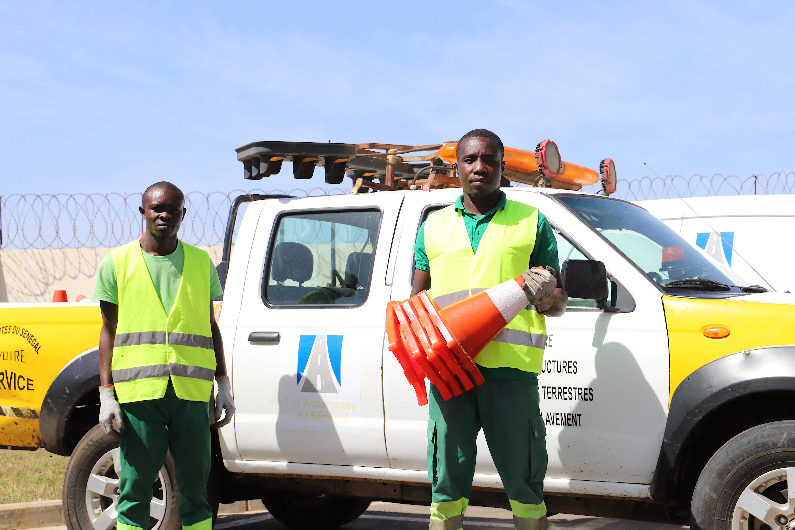
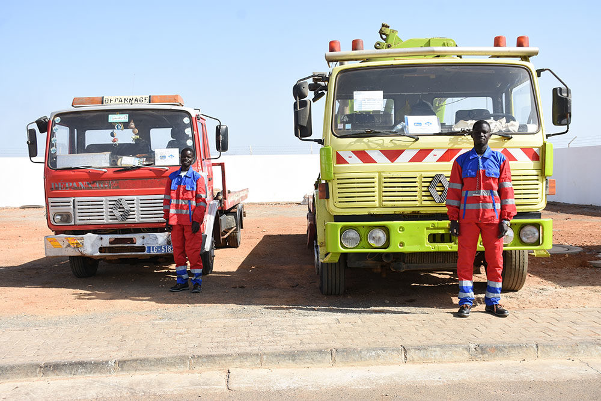
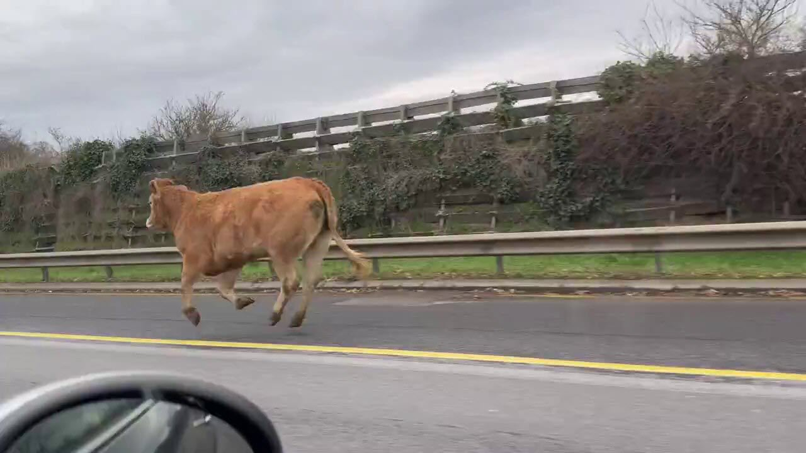

MSA SERVICES assure la gestion et l'exploitation de l'autoroute à péage AIBD - Thies - Touba, AIBD - Sindia - Mbour, Mbour - Thiadiaye et le Pont Nelson Mandela de Foundiougne. Patrouille, remorquage et coordination d'interventions au service des usagers, à chaque kilomètre.
Service permanent toute l'année
Moins de 15 min sur site
Personnel qualifié et formé
Technologie GPS intégrée
MSA SERVICES est une entreprise sénégalaise spécialisée dans la gestion et l'exploitation de l'autoroute à péage ILA TOUBA, AIBD - Mbour, Mbour - Thiadiaye et Pont Foundiougne qui relie la capitale Dakar à la ville sainte de Touba et de Mbour.
Avec des équipes professionnelles, des équipements modernes et une coordination rigoureuse, nous garantissons la sécurité, la fluidité et le confort des usagers à chaque trajet.
Agents formés et certifiés
Intervention en moins de 15 min
Surveillance intelligente du réseau
Standards internationaux respectés
Trois piliers fondamentaux assurent la fluidité et la sécurité sur les Autoroutes à Péage, jour et nuit.
Surveillance continue de l'autoroute par nos équipes mobiles, jour et nuit, pour prévenir et détecter tout incident.
Service de dépannage et remorquage rapide pour libérer la voie et accompagner les véhicules en panne ou accidentés.
Centre de coordination opérationnel qui gère et dispatche toutes les interventions en temps réel sur le réseau.
Notre équipe est entraînée à réagir efficacement face à toute situation imprévue sur l'autoroute.

Sécurisation du périmètre, premiers secours, coordination avec les autorités et évacuation rapide.

Dépannage et remorquage des véhicules immobilisés. Évacuation rapide pour rétablir la circulation.

Capture et évacuation sécurisée des animaux égarés sur la voie pour prévenir tout risque d'accident.
Un protocole rigoureux pour une efficacité maximale, à chaque étape.
Réception de l'appel ou détection par patrouille / vidéosurveillance.
Le centre de répartition coordonne et envoie l'équipe la plus proche.
Sécurisation, prise en charge, remorquage ou évacuation selon le cas.
Documentation complète et retour d'expérience pour amélioration continue.
La confiance des institutions et des usagers, c'est notre plus belle récompense.
L'efficacité et le professionnalisme des équipes MSA SERVICES sont remarquables. Une intervention rapide et un suivi exemplaire à chaque sollicitation.
Très reconnaissante envers l'équipe qui m'a portée secours suite à une panne. Service rapide, courtois et réellement sécurisant.
Une coordination exemplaire avec nos services. MSA SERVICES est devenu un partenaire stratégique pour la sécurité routière au Sénégal.